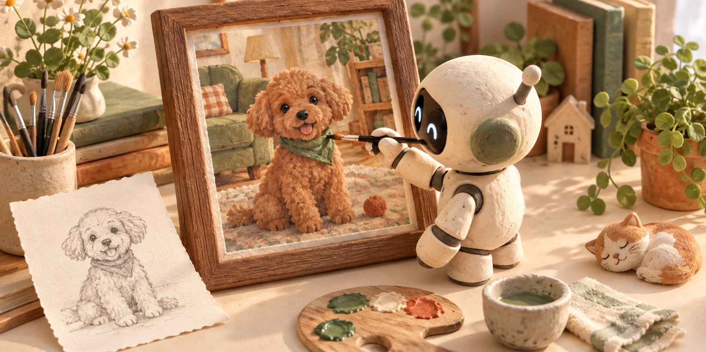

GPT 이미지 2.5 출시…더 선명하게 그리고, 원하는 곳은 더 정확하게 고친다
오픈AI가 9월 8일 새 이미지 생성 모델 ‘GPT 이미지 2.5’를 출시했다. 챗GPT에서는 ‘챗GPT 이미지 2.5’라는 이름으로 제공한다. 회사는 사진의 빛과 질감이 더 자연스러워지고, 사람의 얼굴이나 물건의 모양을 유지하면서 필요한 부분만 고치는 능력이 좋아졌다고 밝혔다.

예를 들어 마음에 드는 인물 사진이 있는데 옷의 색만 바꾸고 싶다고 하자. AI가 옷을 고치면서 얼굴까지 다른 사람처럼 바꿔 버리면 사진을 다시 만들어야 한다. 이번 모델이 겨냥한 불편은 바로 이런 일이다. 고치라고 한 곳은 바꾸되, 이미 잘 나온 얼굴과 배경은 더 잘 남겨 두겠다는 것이다.
그림을 고치는 동안 기다리는 시간도 줄였다. 오픈AI는 이미지 2.0과 비교해 생성에 걸리는 시간이 최대 50% 짧아졌다고 설명했다. 같은 비교 조건에서 두 분 걸리던 일이 한 분으로 줄어드는 정도를 뜻한다. 이 시간 예시는 비율을 쉽게 보여 주기 위한 것이며, 모든 그림이 정확히 한 분 안에 나온다는 안내는 아니다. 오픈AI의 출시 발표
오픈AI는 2.5를 새 주력 이미지 모델로 소개했다. 개발자용 제품 중 정밀한 편집에 무게를 둔 ‘선버스트’는 자사의 이미지 생성·편집 모델 가운데 가장 뛰어난 모델이라고 설명한다. 그림을 만드는 능력과 수정하는 능력을 함께 높인 업데이트다. GPT 이미지 2.5 선버스트 소개
무엇이 더 좋아졌나
한 장을 다시 만들 때, 잘 나온 부분을 더 잘 지킨다
피부·천·물건 표면의 세부 느낌을 더 풍부하게 표현한다.
옷이나 배경을 고칠 때 원래 인물·물건의 특징을 더 잘 유지한다.
수정을 거듭해도 앞에서 정한 모양과 세부 사항을 더 잘 남긴다.
오픈AI가 설명한 개선점이다. 실제 결과는 요청 내용과 원본 사진에 따라 달라진다.
가방은 그대로 두고, 배경만 바꾸고 싶을 때
상품 사진을 만든다고 생각하면 차이가 더 분명하다. 예를 들어 직접 찍은 가방 사진을 올리고 “가방은 그대로 두고 배경만 밝은 거실로 바꿔 줘”라고 부탁할 수 있다. 가방의 손잡이나 지퍼가 달라지면 그럴듯한 그림은 얻어도 그 상품의 사진으로는 쓰기 어렵다. 그래서 제품 사진에서는 새 배경을 멋지게 만드는 일만큼 원래 물건을 알아볼 수 있게 남기는 일이 중요하다.
인물 사진에도 같은 문제가 있다. 공식 개발자 안내에는 사람의 옷을 다른 옷으로 바꾸되 얼굴·자세·머리 모양 등은 유지하도록 요청하는 예가 나온다. 어떤 것을 바꿀지와 어떤 것을 지킬지를 나눠 적는 방식이다. 예쁜 사람을 새로 그려 달라는 주문과 내 사진 속 사람의 옷만 바꿔 달라는 주문은 목표가 다르다. 오픈AI 이미지 요청 작성 안내
수정 요청도 한꺼번에 많이 넣기보다 결과를 보며 좁혀 가면 뜻을 전달하기 쉽다. 예를 들어 배경을 고른 뒤 “지금 사진에서 가방의 색과 모양은 유지하고, 그림자만 조금 부드럽게 해 줘”라고 이어 갈 수 있다. 바뀐 결과가 마음에 들면 다음 수정으로 넘어간다. 이것이 그림 한 장을 여러 차례 대화하며 다듬는 사용 방식이다.
이런 작업에서 이번 개선의 가치는 첫 결과만 보고 판단하기 어렵다. 처음에는 만족스러웠는데 세 번째 수정에서 얼굴이 달라진다면 결국 다시 손봐야 하기 때문이다. 우리처럼 기사마다 대표 그림을 만들거나 같은 제품의 홍보물을 여러 장 만드는 사람에게는, 좋은 결과를 얻은 뒤 끝까지 유지할 수 있는지가 실제 편리함을 가른다.
챗GPT에서 시작하고, 고칠 곳을 직접 가리킨다
일반 사용자는 개발자용 모델 이름을 외우거나 별도 프로그램을 만들 필요 없이 챗GPT에서 시작할 수 있다. 대화창에 만들고 싶은 그림을 설명하거나, 메뉴의 이미지 항목을 연다. 이미 있는 사진을 고치려면 사진을 올린 뒤 바꿀 내용을 적는다. 공식 도움말은 이미지 만들기를 모든 요금제에서 제공한다고 안내한다. 챗GPT 이미지 사용 도움말
이미지가 나온 뒤에는 그 이미지를 열고 수정할 부분을 선택할 수 있다. 사진 속 어디를 말하는지 글로 길게 설명하는 대신 해당 부분을 가리킨 다음 요청하는 것이다. 휴대전화에서는 그림에 댓글처럼 설명을 붙이는 방법도 제공한다. 옷깃이나 배경의 작은 물건처럼 말로 위치를 짚기 어려운 곳을 설명할 때 쓸 만하다.
예를 들어 행사 안내 그림에서 의자가 통로를 막고 있다면 “좀 더 깔끔하게”보다는 “가운데 통로에 놓인 의자만 지우고, 양옆 의자와 무대는 그대로 남겨 줘”라고 적는 편이 목적이 분명하다. 아래 문장은 이번 기사에서 만든 요청 예시다. 실제로 어떤 부분을 남길지 정한 다음 자신의 그림에 맞게 바꿔 쓰면 된다.
이 사진에서 배경만 밝은 실내로 바꿔 줘. 가운데 가방의 색, 손잡이, 지퍼, 놓인 방향은 그대로 유지해 줘. 새로운 글자나 장식은 넣지 마.
사진을 다시 확인할 때도 같은 문장을 기준으로 보면 편하다. 배경이 바뀌었는지 먼저 보고, 가방의 손잡이와 지퍼를 원본과 비교하는 식이다. “더 좋아 보인다”는 느낌과 “요청한 대로 고쳐졌다”는 판단은 다를 수 있다. 사용할 사진의 목적을 먼저 정하면 AI가 만든 여러 결과 중에서 고르는 기준도 생긴다.
배치를 말로 설명하기 어렵다면 밑그림을 넣는다
새로 들어온 ‘스케치’는 직접 그린 밑그림을 AI에게 보여 주는 기능이다. 공식 도움말의 휴대전화 사용 순서는 대화창에 ‘@’를 입력해 Sketch를 고르고, 그림을 그린 뒤 확인 표시를 누르는 방식이다. 이어서 색이나 재료, 원하는 분위기를 글로 덧붙여 보내면 된다. 스케치는 완성품이 아니라 AI에게 생각을 전달하는 재료다.
예를 들어 작은 가게 홍보 그림을 만든다면 종이에 정교한 간판을 그릴 필요는 없다. 사각형으로 가게 위치를 잡고 앞쪽에 화분 자리를 표시한 다음 “이 배치로 따뜻한 수채화 느낌의 가게 그림을 만들어 줘”라고 적을 수 있다. 이것은 사용 방법을 설명하기 위한 예시다. 화면의 왼쪽과 오른쪽에 무엇을 둘지 말로 반복하는 수고를 덜 수 있다.
처음부터 무엇을 적어야 할지 막히면 미리 마련된 형식도 고를 수 있다. 챗GPT의 이미지 메뉴에서 Templates를 열면 포스터 같은 종류를 선택하고 내용을 채우는 방식으로 시작한다. 여기서 템플릿은 만들려는 그림의 기본 틀이라는 뜻이다. 9월 9일 확인한 안내에서는 이 기능을 Work 모드에는 아직 제공하지 않는다고 설명한다. 9월 8일 기능 업데이트 안내
내가 가진 재료에 따라 시작하기
글로 말하고, 사진을 올리고, 밑그림으로 보여 줄 수 있다
무엇을 그릴지와 색·분위기·쓸 곳을 적는다.
바꿀 대상과 그대로 남길 대상을 함께 알려 준다.
@ → Sketch → 그림 확인 → 설명을 덧붙여 보낸다.
목표가 분명할수록 요청도 구체적이다. “멋지게”보다 “가방은 그대로, 배경만 밝게”가 전달하기 쉽다.
개발자용은 빠른 모델과 정밀한 모델로 나뉜다
이미지 기능을 자신의 앱이나 쇼핑몰에 붙이는 개발자에게는 두 모델이 제공된다. ‘플레어’는 빠르게 많은 그림을 만드는 용도에, ‘선버스트’는 더 정밀하게 다듬어야 하는 작업에 초점을 맞춘다. 여기서 API는 다른 프로그램이 오픈AI의 이미지 기능을 불러 쓰는 연결 방법이다. 일반 사용자는 챗GPT를 열어 쓰고, 개발자는 이 연결을 통해 자신의 서비스 안에 기능을 넣는다.
플레어를 소개한 공식 모델 문서는 일상적인 고품질 이미지 생성을 위한 자사의 가장 빠른 모델이라고 설명한다. 예를 들어 사용자가 제품 사진을 올릴 때마다 배경 후보를 만드는 서비스라면 기다리는 시간이 중요한 선택 기준이 된다. 반면 큰 광고에 쓸 최종 이미지를 여러 번 다듬는 작업에서는 시간이 더 걸리더라도 작은 모양을 지키는 능력에 더 무게를 둘 수 있다. GPT 이미지 2.5 플레어 안내
어느 모델이 나은지는 같은 사진과 같은 요청을 넣어 비교할 수 있다. 예를 들어 같은 가방을 두 모델에 보여 주고 배경을 바꾼 뒤, 걸린 시간과 가방 모양이 달라진 곳을 함께 기록하는 식이다. “빠르다”는 설명만 보고 결정하면 중요한 상품 모양을 놓칠 수 있고, “정밀하다”는 설명만 보면 서비스에서 기다리는 시간을 놓칠 수 있다.
좋아진 부분과 직접 확인할 부분을 나눠 본다
화질과 속도의 개선은 오픈AI가 발표한 내용이다. 실제로 걸리는 시간은 어떤 사진을 넣고 얼마나 복잡하게 고치느냐에 따라 달라진다. 개발자용 공식 안내도 같은 요청과 사진으로 비교해 보도록 권한다. 여러 장 중 마지막에 쓸 한 장을 고르는 일이라면, 첫 그림이 나온 시간뿐 아니라 다시 고치느라 걸린 시간까지 함께 보는 것이 실용적이다.
정확한 부분 수정에도 확인은 남는다. 공식 안내는 선택한 영역 밖까지 바뀔 수 있고, 여러 번 고치는 동안 남겨 달라고 한 세부 사항이 달라질 수 있다고 설명한다. 상품의 글자, 사람의 얼굴, 그림 안의 날짜처럼 틀리면 곤란한 부분은 마지막 결과와 원본을 나란히 놓고 볼 필요가 있다. 특히 그림 속 한글 안내문은 분위기가 자연스러운지만 보지 말고 글자 자체를 읽는 것이 좋다.
여러 장을 만들 계획이라면 복잡한 주문을 처음부터 쏟기보다 한 장으로 필요한 수준을 먼저 확인하는 편이 합리적이다. 예를 들어 블로그 대표 그림을 만들 때는 가로로 긴 모양과 중요한 물건의 위치부터 정하고, 그다음 색과 장식을 고를 수 있다. 나중에 제목을 얹을 생각이라면 처음부터 글자가 들어갈 빈 공간을 요청하는 방법도 있다.
사용량 제한은 기존대로 유지된다. 새 모델이 나왔다고 그림을 무제한으로 만들 수 있게 바뀐 것은 아니다. 오픈AI의 기능 업데이트 안내는 이미지 생성 한도를 바꾸지 않았다고 명시한다. 따라서 여러 후보를 만들 계획이라면 먼저 작은 수정 한두 번으로 결과를 보고, 사용할 수 있는 양 안에서 나머지 작업을 정하는 편이 낫다.
마음에 드는 결과는 기기에 저장해 두면 다음 작업에 다시 쓰기 편하다. 챗GPT에서 만든 그림은 이미지 보관함에서도 다시 열 수 있고, 그림을 연 뒤 저장 메뉴로 내려받을 수 있다. 예를 들어 처음 만든 가방 사진을 따로 보관하면 배경을 여러 차례 바꾼 뒤에도 가장 처음의 손잡이와 지퍼 모양을 다시 비교할 수 있다.
이번에는 마음에 든 그림을 완성하는 쪽에 더 가까워졌다
블로그나 작은 가게의 홍보물을 만드는 입장에서 이번 업데이트는 써 볼 이유가 분명하다. 이미 괜찮게 나온 그림을 버리지 않고 배경, 옷, 작은 물건을 차례로 고칠 수 있기 때문이다. 사진을 더 자연스럽게 만드는 개선에 밑그림과 부분 지정 방법까지 더해져, 머릿속 모양을 AI에게 전달할 방법도 늘었다.
가장 간단한 시작은 자신이 가진 사진 한 장에서 한 부분만 바꿔 보는 것이다. 바꾸고 싶은 곳을 정확히 짚고, 좋아하는 부분은 남겨 달라고 적으면 된다. GPT 이미지 2.5에서 눈여겨볼 변화는 한 번 멋진 그림을 얻는 즐거움과 함께, 그 그림을 원하는 모습으로 끝까지 다듬는 편리함이다.
확인한 원문
발표일은 2026년 9월 8일, 확인일은 9월 9일이다. 회사의 성능 설명과 공식 사용 안내를 바탕으로 작성했다. 본문의 가방·가게·행사 예시는 사용 방법을 설명하기 위해 편집부가 만들었으며, 자체 성능 시험 결과가 아니다.